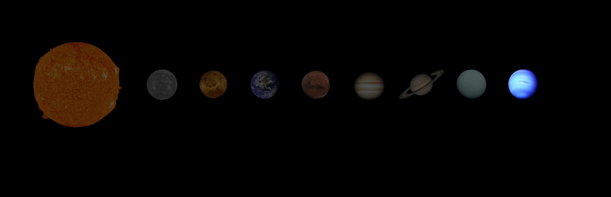

NEPTUNE
Neptune is the eighth and most distant planet from the Sun.
OVERVIEW

Sun — Mercury — Venus — Earth — Mars — Jupiter — Saturn — Uranus — Neptune
- Eighth planet from the Sun. Second of the two ice giants (Uranus and Neptune)
- Most distant planet - more than 30 times further away from the Sun than Earth
- Too distant to be seen with the naked eye from Earth. Predicted from mathematical equations before it was seen for the first time in 1846!
- As an ice giant, most of its mass comes from "icy" materials including water, methane and ammonia
- Fastest winds in the Solar System - faster than the speed of sound!
- Little to no chance for life to survive there or on its moons
- Click here to open 3D model
FACTS
GOD OF THE SEAS
Neptune is named after the Roman god of the same name.
In Roman mythology, Neptune is the god of the seas.
ITS EXISTENCE WAS PREDICTED BEFORE IT WAS OBSERVED
Neptune was the first planet whose existence was predicted before it was actually seen.
Anomalies (observations different to those predicted by mathematical equations) in the orbit of Uranus puzzled scientists at the time. A few different explanations were suggested but one possibility was that Uranus's orbit was being disturbed/influenced by another (large) body like a planet.
When scientists looked where they predicted Neptune would need to be to explain the odd findings, eyes were laid on Neptune for the first time and, alas, a new planet was discovered!
IT HAS THE STRONGEST WINDS IN THE SOLAR SYSTEM
Neptune is home to the strongest winds in the Solar System. Wind speeds can exceed 1,100 mph (about 1.5 times the speed of sound) at high altitudes.
By comparison, the fastest wind speed ever recorded on Earth was 231 miles per hour, during a tropical cyclone in New Hampshire, United States, that took place in the 1930s.
IT HAS ONLY EVER BEEN VISITED ONCE
Exactly as for its ice giant companion, Uranus, Neptune has only ever been visited by one spacecraft.
NASA's Voyager 2 probe flew past the planet in August of 1989, sending home some of the first close-up images of Neptune.
IT HAS AN ACTIVE CLIMATE
Neptune is spinning rapidly, which partly explains the very high wind speeds on the planet. These also result in some very wild and interesting weather patterns. The planet is never without huge, fierce storms.
One example of a well known storm on Neptune is called the Great Dark Spot. It is similar in appearance to Jupiter's Great Red Spot and is visible from space.
IT PROBABLY STARTED OUT A LOT CLOSER TO THE SUN
Scientists believe that Neptune (and maybe some of the other planets in our Solar System) were actually formed much closer to the Sun than their current positions, but somehow "migrated" outwards further into the darkness of space.
This explains why these planets, which are made up almost entirely of gases, are still around today. If they were closer to the Sun, the gas would vaporise away due to the Sun's heat.
LIFE ON NEPTUNE?
- Just as was the case for Uranus, unfortunately the ice giants (Uranus and Neptune) are neither particularly interesting nor realistic places to harbour life in the Solar System, nor to be colonised by humans in the future. Their moons are also generally either too small or have conditions that are too harsh for there to be any reasonable chance of life existing there.
- With Neptune, perhaps the only place worth mentioning is Triton – the planet’s largest moon. It is made up of an icy surface with a rocky core. But not water ice, rather frozen nitrogen. The temperature on the moon has to be remarkably cold for this to be possible – and indeed it is! The average temperature comes in at just -235° C, making it one of the coldest places in the entirety of the Solar System! The Sun would appear only as a small dot in the sky on Triton, understandably given that it is around 30 times further away from the Sun than the Earth is.
- It is volcanically active, making it one of only four bodies in the Solar System known to have active volcanoes (the other three being Earth, Venus and Io – one of the Galilean moons of Jupiter). This gives Triton an atmosphere, albeit a very thin one. Too thin for there to be any kind of weather.
- The surface gravity is also very weak – only 8% of Earths. There is little to no chance of humans finding life on a place like Triton nor settling and establishing a colony there. It is just too hostile and far from home. Where life and the future of humanity are concerned, it is far more sensible to turn to places better known for the possibility of life, like Mars, some of Jupiter’s moons, or even our own moon.
.jpg)
Triton portrayed by Voyager 2 in 1989. NASA / Jet Propulsion Lab / U.S. Geological Survey, Public domain, via Wikimedia Commons.